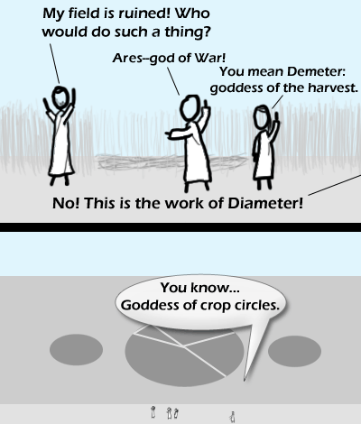

Comic JK 352
When I Feel Like It
⇤
<
?
>
⇥

⇤
<
?
>
⇥
Forum
.
RSS
.
Digg
.
Facebook
.
Reddit
.
Twitter
.
Stumbleupon
Enter your thoughts on number 352 here. Please, no spamming, trolling, or farting. Vestra Diameter. heehee. > oh how I miss those days. And alphi, don't forget about alphi - Z > alphi ain't a goddess, she's a centaura. I like how they're all wearing lab coats on what we can assume to be a farm. >Looks more like togas, fits the whole greek god theme >>No I'm pretty sure they're lab coats. I don't remember ever seeing long-sleeve togas >>>I've yet to see lab coats with the distinctive 2 fold lines indicating where the wrap goes over the shoulder. Though the long sleeved-ness is a bit odd. >>>>Or maybe they're just white robe things? >>>>>maybe they are toga lab coats. ever thought of that? I'm pretty sure this is actually the work of the god Radius... however his name isn't similar to any of the ancient Greek or Roman gods so he usually gets overlooked. >Ha! He's not half the god Diameter is... >>Actually, he's exactly half. Very good:D Keep up the good work. Comic JK is one of the best comics i've read lately.You got yourself a new fan. +1 >Great to have you on board! If puns equated into pain, I would be gibbed by now. ...wow. Didn't expect that joke from Myth class to show up again.